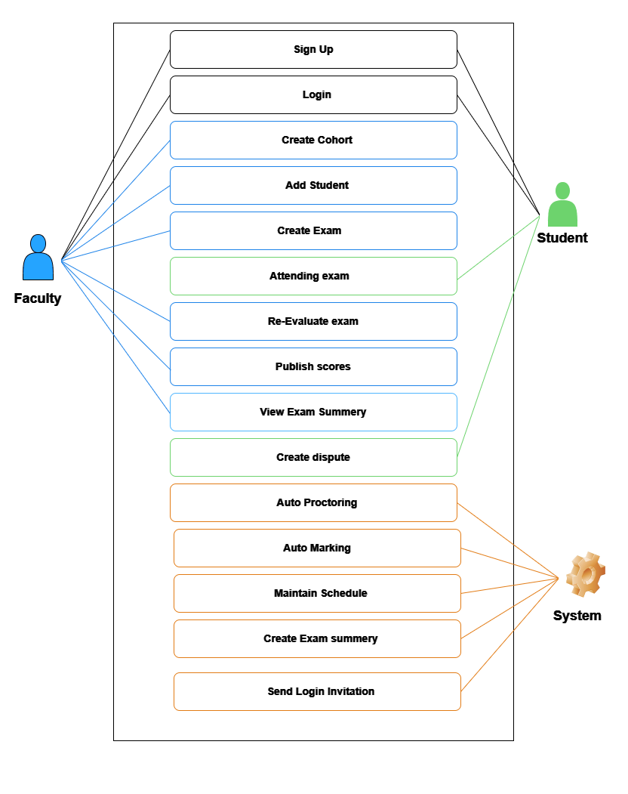

Software Requirements Specification
1. Introduction.
1.1 Purpose
This document delineates the first version of the software prerequisites for the online exam
cohort system. It presents the client's software requirements clearly and comprehensively,
as detailed by the business analyst team, with a focus on precision in all aspects.
Encompassing the entirety of the exam-cohort system's requisites, this document extends
beyond subsystems or isolated components.
1.2 Document Conventions
The document employs the "Arial, sans-serif" font, with 'font size 26px' utilized for titles
and 'font size 22px' for sub-titles. It adheres to the IEEE standard for creating a
"Software Requirement Specification (SRS)."
1.3 Intended Audience and Reading Suggestions.
The document targets several audiences including Business Clients, System Design Engineers,
Quality Assurance Engineers, Project Managers, and future maintenance teams. It serves as a
crucial link between the business analyst and the client, ensuring the accuracy of
requirements and bridging any gaps to save time, cost, and resources. System designers, upon
gaining a full understanding of project requirements, can proceed with their System Design
Specifications (SDS). Project managers use this document to comprehensively plan projects
and select suitable development strategies like agile or waterfall, prioritizing high-impact
use cases to optimize resource utilization.
Quality assurance teams engineer test plans based on the SRS requirements to verify software
implementation aligns with client needs. During maintenance periods, this document acts as a
fail-safe resource, providing insight into the software's purpose, scope, parameters, and
objectives when the original team is unavailable. It's advisable to limit access to this
document to software developers to ensure reliance on the SDS, thereby allowing the Quality
Assurance team to detect design flaws or inefficiencies during testing. This enables
iterative improvements in subsequent iterations.
For effective comprehension, it's suggested to follow the order outlined in the "Table of
Contents" of the SRS document.
1.4 Product Scope
The "Exam-Ease" system facilitates the opportunity for individuals to engage in online
examination procedures. This software framework caters to two distinct user categories:
Faculty and students. A primary aim of this software is to establish an online platform that
serves as a substitute for traditional in-person exams. Nonetheless, the principal
distinguishing factor of this software lies in its Micro-Viva functionality and
Auto-Proctoring system.
The Micro-Viva feature involves presenting candidates with Faculty-generated questions in
the form of voice recordings. In response, students utilize an integrated system feature to
record their vocal responses for the Micro-Viva questions. On the other hand, the
Auto-Proctoring system utilizes facial recognition technology to verify the identity of the
student undertaking the examination and to identify any potentially suspicious activities.
Ensuring robust security measures, the software diligently safeguards against any
inadvertent disclosure of answers, thus maintaining the integrity of the examination system.
Moreover, the software is compatible with various educational contexts, including learning
management systems, educational institutions, and modern EdTech businesses. As a result, it
can seamlessly integrate with these establishments or enterprises.
1.5 References
IEEE Guide for Software Requirements Specifications
2. Overall Description
2.1 Product Perspective
This offering constitutes an element of the software engineering course evaluation during
the summer academic term of 2023 at North South University. The concept for this project was
put forth by a faculty member who took on the role of the "client." In turn, a group of
students assumed the role of an imaginative software firm to execute the tasks. The
resultant product materializes as a novel, standalone system, distinct from both any
existing product lineage and any preexisting system it doesn't supplant.
2.2 Product Functions
The product should enable users to register within the system using a valid email address.
During the registration process, users will select their role as either a faculty member or
a student. Faculty members possess the authorization to establish new cohorts and include
students by using their respective email addresses. In cases where the added email address
is not yet registered within the system, an invitation will be dispatched to that email
address.
Faculty members are empowered to create exams within a cohort, with each exam having the
capacity to encompass multiple questions. Students who have been included in a cohort are
eligible to participate in the exams. The exams can be scheduled with flexibility and set to
a specific duration. Upon exam completion, the system will undertake automated exam grading
and generate an exam summary for each student. This summary might include indications of
tab-switching, communication with others, absence in front of the camera, and similar
factors.
Faculty members retain the ability to release the exam scores. Following the release of
scores, students have the option to raise disputes regarding their exam results, attaching
specific comments. In response, faculty members can proceed to manually re-evaluate the
answers as necessary.

2.3 User Classes and Characteristics
Every user possesses the capability to log into the system by using a valid email address.
Exclusive to faculty members is the ability to initiate the creation of an exam cohort.
Within each established exam cohort, faculty members, in addition to including candidates
via email, hold the privilege to design multiple examinations. Moreover, within each exam,
faculties can incorporate multiple-choice questions (MCQs), short-text queries, and
Micro-viva questions. They can also readjust student scores and furnish assessment details
such as availability date-time and duration.
In instances where a student added to a cohort isn't already registered in the Exam-Ease
system, they will receive an invitation link for registration and automatically be
integrated into the cohort. MCQs encompass standard multiple-choice questions, which may
involve multiple correct answers. In such cases, candidates need to select all applicable
answers to secure points for the question. Short-text answers require students to type out
their responses.
Viva questions and responses exclusively employ voice recordings. Both evaluators and
candidates have the capability to record their voices or listen to previously recorded
content within the software's provided user interface. Faculty members will record their
voices while adding micro-viva questions or specifying correct micro-viva answers. During
assessments, candidates can listen to micro-viva questions and provide recorded voice
answers. When evaluators need to adjust a candidate's assessment score, they can listen to
micro-viva responses and review short-text and MCQ answers.
The system undertakes automated assessment grading and generates a summary of the exam
results for each student, including indicators of suspicious activity. Following the exam's
conclusion, faculty members publish the grades. Students are empowered to initiate a dispute
for a specific examination, attaching requisite comments for manual evaluation.
Subsequently, faculty members can modify the marks accordingly.
2.4 Operating Environment
The software is designed to function on both web applications and Android devices. To ensure
proper operation, the operating environment must include a functioning microphone for voice
recording. It is advisable to avoid employing outdated versions of the Android operating
system and instead opt for a relatively contemporary web browser.
2.5 Design and Implementation Constraints
The client's specifications entail the inclusion of short-text and voice answers within the
software, with automatic evaluation. Consequently, the software's language scope is confined
to English.
To ensure security, students are limited to participating in a particular exam of an
assigned exam-cohort, designated by the respective faculty member of the cohort. Students
are restricted from accessing exam cohorts that haven't been assigned to them by faculty
members. This principle also applies to exams that aren't part of any exam cohort from the
student's assigned cohort listings.
Moreover, to prevent any potential leakage of correct answers, questions and answer options
presented to a student during an assessment will be randomly arranged. The integrity of the
assessment process is maintained across all interfaces interacting with students. In the
event that an exam's time limit is exceeded, the system will automatically detect this
circumstance and promptly submit the student's answers.
2.6 User Documentation
The software package includes both a user manual and a brief video intended for individuals
without technical expertise. This video provides instructions on "software installation and
usage.
2.7 Assumptions and Dependencies
The software presupposes that users' devices are equipped with internet connectivity and can
effectively utilize both the web application and Android app interfaces. Moreover, it is
expected that users possess the necessary hardware components, such as a microphone for
voice recording and a camera. The functionality of this software hinges on the utilization
of external APIs like the Face-Verification API and machine learning-based speech-to-text
APIs. Consequently, a significant aspect that sets this software apart rests on the
effectiveness of these external machine learning models. It is assumed that these models
perform adequately. It's worth noting that any discrepancies or alterations in these
assumptions or dependencies can potentially impact the project's progression and outcome.
3. External Interface Requirements
3.1 User Interfaces: Student
The Student Interface is designed to provide students with
a
user-friendly experience
for accessing exams, receiving notifications, and interacting with the system.
3.1.1 Sign-Up Page
Purpose: Allows new students to create an account using their Google account.
Components:
- "Sign Up with Google" button
- Link to the login page for returning students
3.1.2 Login Page
Purpose: Allows registered students to log in to their accounts using their Google
account or standard credentials.
Components:
-
"Sign In with Google" button
-
Username/Email field
-
Password field
-
"Login" button
-
"Forgot Password" link
3.1.3 Dashboard
Purpose: Provides an overview of upcoming exams, recent results, and notifications.
Components:
-
List of upcoming exams with links
-
Recent exam results with details
-
Notification panel
3.1.4 Exam Taking Interface
Purpose: Allows students to take exams during the designated 2-hour window.
Components:
-
Exam instructions and timer
-
Question navigation (next, previous)
-
Exam instructions and timer
-
Text and Voice input fields for answers
-
Camera status indicator
-
Submit button
3.1.5 Results Page
Purpose: Displays automatic exam results and allows students to raise disputes.
Components:
-
Exam scores and feedback
-
Option to raise a dispute
-
Exam statistics
3.1.6 Profile Settings
Purpose: Allows students to manage their profile and account settings.
Components:
-
Profile picture upload
-
Change password
-
Email settings
-
Notification preferences
3.2 User Interfaces: Teacher
The Teacher Interface is designed to empower teachers to manage cohorts, exams, and
resolve student disputes efficiently.
3.2.1 Sign-Up Page
Purpose: Allows new teachers to create an account using their Google account.
Components:
- "
Sign Up with Google" button
-
Link to the login page for returning teachers
3.2.2 Login Page
Purpose: Allows registered teachers to log in to their accounts using their Google
account or standard credentials.
Components:
- "
"Sign In with Google" button
-
Username/Email field
-
Password field
-
"Login" button
-
"Forgot Password" link
3.2.3 Dashboard
Purpose: Provides an overview of cohorts, upcoming exams, and notifications.
Components:
- "
Cohort management tools
-
List of upcoming exams with links
-
Notification panel
3.2.4 Cohort Management
Purpose: Allows teachers to create, edit, and manage cohorts or courses.
Components:
- "
Create new cohort form
-
List of existing cohorts
-
Add students to cohorts via email
3.2.5 Exam Creation and Management
Purpose: Enables teachers to create and manage exams, including setting question types
and evaluation criteria.
Components:
- "
Create new exam form
-
List of existing exams
-
List of existing exams
-
Exam duration settings
3.2.6 Exam Evaluation
Purpose: Provides tools for evaluating student exams manually and resolving disputes.
Components:
- "
Review student answers
-
Review student answers
-
Resolve disputes
3.2.7 Profile Settings
Purpose: Allows teachers to manage their profile and account settings.
Components:
- "
Profile picture upload
-
Change password
-
Email settings
-
Notification preferences
3.3 Hardware Interfaces
The key hardware prerequisite for the system involves either a computer or a mobile phone
running the Android operating system. The system mandates microphone authorization for
micro-viva, camera accessibility for automated proctoring, and an active internet
connection.
3.4 Software Interfaces
Working on it, searching APIs.
3.5 Communications Interfaces
The system will employ a Restful API to establish a connection between the frontend/mobile
app and the backend server. Token authentication will be utilized to facilitate
communication between the frontend and backend via the API.
4. System Features
4.1 Sign Up
Use Case
Sign up
Actors
Faculty and Student
Purpose
Registering user to the system
Overview
Users initiate the registration process through the intuitive user
interface. Upon commencing registration, users are prompted to select their
designated role within the system, either as a Faculty member or a Student.
Based on the chosen role, individuals are presented with a tailored
registration form, wherein they provide essential details required to
establish a new account (such as name and password). A crucial requirement
for successful registration is the provision of a valid email address,
ensuring authenticity and communication. It's noteworthy that each email
account is associated with a singular system account, thereby preventing
duplicity. Once the registration process is successfully completed, the
system enforces a restriction against changing roles (e.g., transitioning
from Student to Faculty), ensuring role consistency throughout the user's
engagement with the platform.
Type
Primary
Cross References
Not Applicable.
Typical Course of Events
Actor Action
System Response
1. This use case is initiated when the user opts to sign up for the system.
2. Upon this decision, the user either clicks/touches the "Sign Up" button
within the user interface or accesses the registration URL.
3. In response, the system navigates the user to a dedicated registration
page.
4. The user is prompted to select their role within the system, choosing
either 'Faculty' or 'Student.'
5. Subsequently, the system presents the user with an appropriate form to
complete the registration process.
6. The user conscientiously completes the registration form, culminating in
the action of clicking the "Register" button.
7. With the user's input processed, the system securely generates an account
within the database and seamlessly redirects the user to their personalized
dashboard, thereby providing instant access to the system's features.
Alternative Courses
content
4.2 Login
Use Case
User login
Actors
Faculty and Student
Purpose
To verify user credentials and establish secure entry into the system.
Overview
The user's intention is to access the software by utilizing the user
interface. To achieve this, the user inputs their email address and password
for authentication purposes, followed by clicking the login button. Upon
successful verification, the user is seamlessly directed to their
personalized dashboard.
Type
Primary
Cross References
Functions: Section 4.1
Actor Action
System Response
1. This use case commences with the user's decision to initiate a login into
the system. The user accesses the login URL.
2. In response, the system directs the user to a dedicated login form.
3. The user inputs their email credentials and proceeds by clicking the
login button.
4. Upon successfully validating the provided credentials, the system
redirects the user to their intended dashboard. Additionally, the system
determines whether the user is a student or faculty member and generates an
authentication token for the user's secure access.
Alternative Courses
content
4.3 Create Cohort
Use Case
Create Exam-Cohort
Actors
Faculty
Purpose
Faculty members to initiate the creation of exam cohorts upon logging into
the software.
Overview
Following successful authentication, Faculty members can proceed to craft an
exam cohort directly from their dashboard. By selecting the "Create Cohort"
option, the system prompts the faculty to complete a form tailored for this
purpose. After filling out the required information, the user submits the
form. Subsequently, the system undertakes the processing and validation of
the form data, ultimately generating a new exam cohort.
Type
Primary
Cross References
Functions: Section 4.1, 4.2
Actor Action
System Response
1. This use case commences when a faculty member opts to initiate the
creation of an exam cohort from their dashboard.
2. The faculty member selects the "Create Cohort" button.
3. In response, the system displays a form or dialogue on the user
interface, prompting the faculty member to input the requisite details for
the new exam cohort.
4. he faculty member diligently completes the necessary details of the exam
cohort within the presented form and subsequently submits it.
5. Upon submission, the system processes the information and generates a
fresh entry for the exam cohort within the database. The faculty member
initiating this use case is automatically designated as the evaluator of the
newly created exam cohort.
6. The system conveys a message of success to the user interface, indicating
"New exam-cohort successfully created!" Additionally, the system visually
includes the newly formed exam cohort within the dashboard, where it is
presented alongside other existing cohorts.
Alternative Courses
content
4.4 Add Students in Cohort
Use Case
Adding student into a cohort
Actors
Faculty
Purpose
Faculty members add students into cohorts
Overview
Once a faculty member has been successfully authenticated and established
their exam group, they can easily include students in this group by
inputting their email addresses into a form and then selecting the 'Add
student' button.
Type
Primary
Cross References
Functions: Section 4.1, 4.2, 4.3
Actor Action
System Response
1. This scenario commences when a faculty member opts to include student(s)
in their cohort via the cohort's panel.
2. The faculty member selects the "Add Student" button located within the
cohort's panel.
3. The system then displays a dialogue form, presenting an input field for
the email address.
4. The faculty enters the email address into the input field and proceeds to
click the "Add" button.
5. The system adds the user with the provided email address as a student to
the cohort, and a message reading "Student successfully added" is displayed
in the user interface.
Alternative Courses
content
4.5 Create Examination
Use Case
Create Examination
Actors
Faculty
Purpose
Faculty of cohorts creates an examination into their cohort.
Overview
After the faculty member has been authenticated and successfully created
their examination cohort, they have the ability to generate exams within
these cohorts. When initiating a new examination, the faculty member will
specify the available date and time for the exam, its duration, and define
individual questions. Each cohort encompasses multiple-choice questions
(MCQs), written questions, and micro-vivas. The faculty member can include
any number of MCQs, written questions, and micro-vivas in an assessment.
When adding an MCQ, the faculty member will input the question statement
text, provide all the answer options with corresponding text, select the
correct answers, and assign marks to the question. When incorporating a
written question, the faculty member will formulate the question and provide
the answer. For micro-vivas, the faculty member will add the question
statement as a voice recording, along with the correct answer as a voice
recording.
Type
Primary
Cross References
Functions: Section 4.1, 4.2, 4.3
Actor Action
System Response
1. This scenario unfolds when a faculty member intends to establish an
examination for a cohort.
2. The faculty member initiates the process by selecting the "Create a New
Exam" button within the cohort panel.
3. The system responds by presenting a form to the faculty.
4. The faculty member proceeds to complete the form, supplying the available
date and time, specifying the duration, and providing detailed information
for each question.
5. Following this, the system incorporates a new assessment into the cohort
and displays a message in the user interface, confirming the successful
addition of the assessment. Additionally, notifications are dispatched to
the students within that cohort.
Alternative Courses
content
4.6 Attending Examination
Use Case
Attending Examination
Actors
Student
Purpose
Students who are candidate of cohort will attend examination.
Overview
Upon successfully logging into the system, students can participate in an
examination within the specified time window determined by the faculty. They
are required to complete the examination within a fixed duration after
commencing. Throughout the examination, students must ensure they are in a
well-lit environment to maintain clear visibility of their faces. Students
must grant permission for camera and microphone access to take the
examination, and they are not permitted to switch browser tabs or switch to
other application screens during the examination.
Type
Primary
Cross References
Functions: Section 4.1, 4.2, 4.5
Actor Action
System Response
1. The use case begins when a student intends to take an examination.
2. The student initiates the examination by clicking the "Start Now" button
within a specific cohort.
3. The system prompts the user to an examination window.
4. Students will answer multiple-choice questions (MCQs) by selecting
checkboxes, type their answers for written questions, and record their
voices for micro viva questions. After completing the examination, the
student will click the "Submit Answers" button.
5. The system will save the answers and prompt the student to return to the
cohort's home page.
Alternative Courses
content
4.7 Re-Evaluate Examination
Use Case
Re-Evaluate Examination
Actors
Faculty
Purpose
Faculty of a cohort can evaluate the answers of the students manually.
Overview
When a student has participated in an examination, the system automatically
grades their performance. However, if the faculty believes there may have
been an issue with the provided answers or some student creates dispute,
they have the option to manually adjust the grades for all students in the
cohort. Additionally, the faculty can access and review the responses,
including scripts or recordings, of any student within the examination
cohort.
Type
Primary
Cross References
Functions: Section 4.1, 4.2, 4.3, 4.5, 4.6, 4.10, 4.12
Actor Action
System Response
1. This use case is initiated either when faculty members wish to adjust a
student's grade, review their answer script, or when a student raises a
dispute.
2. The faculty member begins by clicking the "Check Response" button located
in the assessments panel.
3. The system then displays a list of students along with their respective
marks, accompanied by an "Adjust Mark" button.
4. If the faculty member intends to review the answer script of a particular
student, they simply click or tap on that student's name.
5. The system will then present the answer script of the selected student,
which will not be randomized, and include playback buttons for the micro
viva question and answer and percentage of match with provided answers.
6. Should the faculty member wish to modify any provided answer, they can do
so by clicking the "Adjust Mark" button.
7. The system will subsequently show a list of questions along with their
corresponding answers, as provided by the faculty member.
8. The faculty member can make the necessary adjustments to the answers and
then save their changes.
9. Following this, the system will update the marks for all students based
on the revised answers and display a message indicating "Updated Marks.
Alternative Courses
content
4.8 Publish Score
Use Case
Publish score
Actors
Faculty
Purpose
Publishing scores of an examination after the examination ends
Overview
After and examination is over faculty will publish scores and students will
receive a notification.
Type
Primary
Cross References
Functions: Section 4.1, 4.2, 4.3, 4.5, 4.6, 4.10, 4.12
Actor Action
System Response
1. This use case commences when faculty members wish to publish the scores
of an examination.
2. The faculty member clicks on the "Publish Scores" option within the
examination panel.
3. The system displays a message stating "Score published" and marks the
examination as "Published Score."
4. The system sends a notification to each student in the cohort for that
specific examination.
Alternative Courses
content
4.9 View Exam Summery
Use Case
View Exam Summery
Actors
Faculty
Purpose
Faculy can see the whole exam timeline as summery
Overview
After an examination is over, the system creates a summery of that
examination. Faculty can see that summer that involves each students
actitivy
Type
Primary
Cross References
Functions: Section 4.1, 4.2, 4.3, 4.5, 4.6, 4.0, 4.11
Actor Action
System Response
1. This use case commences when faculty members wish to view the summery of
an examination.
2. Faculty clicks a button "View Summery" in a examination panel inside
their cohort.
3. In response the system shows a list of students name who attended the
exam
4. Faculty clicks on a students name to view a specific student's activity
during the exam.
5. System show the faculty a graph representation of various activity of the
student during the exam.
Alternative Courses
content
4.10 Create Dispute
Use Case
Create dispute
Actors
Studnet
Purpose
Studends making dispute for a examination score.
Overview
After the scores of an examination have been published, a student has the
option to initiate a dispute for a specific examination. The student will
articulate their concerns, specifying the question number related to the
dispute. Upon creating the dispute, a faculty member will undertake a
re-evaluation of the student's answers.
Type
Primary
Cross References
Functions: Section 4.1, 4.2, 4.6, 4.8
Actor Action
System Response
1. This use case begins when a student desires to file a dispute for a
specific examination.
2. The student initiates the process by clicking the "Create Dispute" button
within the examination panel.
3.The system presents a form for the student to complete when creating a
dispute.
4. The student, while creating the dispute, will document the issue and
optionally include question numbers, then proceed to click the "Submit"
button.
5. The system generates the dispute and sends a notification to the faculty
responsible for that examination.
Alternative Courses
content
4.11 Auto-Proctoring
Use Case
Automatic Proctoring
Actors
System
Purpose
Making the proctorig process automatic
Overview
When a student commences an examination, the 'auto-proctoring' system
activates to monitor the student's activity throughout the test. It verifies
the student's identity by recognizing their face, ensuring the correct
individual is taking the examination. Additionally, it prevents the student
from switching browser tabs until they complete the examination. In the
event of any suspicious activity, the system logs the details into the
examination summary.
Type
Primary
Cross References
Not applicable
Actor Action
System Response
1. This use case is initiated when a student begins taking an examination.
2. The student clicks the "Start Exam" button.
3. The system gains access to the student's device, including the camera and
microphone, and begins analyzing the student's behavior during the
examination. It also logs this activity into the examination summary.
Alternative Courses
content
4.12 Auto-Marking
Use Case
Automatic marking
Actors
System
Purpose
Marking answers of student after the exam ends.
Overview
When a student submits their answers, the system automatically evaluates the
responses and assigns scores. Multiple-choice questions (MCQs) are assessed
based on exact matches with the correct answers. For written questions and
short vivas, the evaluation is conducted partially by comparing the
similarity of the responses with the actual answers using a large language
model (LLM).
Type
Primary
Cross References
Not applicable
Actor Action
System Response
1. This use case is initiated when a studentfinishes an examination.
2. Student clickes "Submit answers" button in the user interface
3. The system marks the answers according to the actual answers provided by
the faculty.
Alternative Courses
content
4.13 Maintain Schedule
Use Case
Maintain Schedule
Actors
System
Purpose
Maintaing flexible examination window and tight duration
Overview
When faculty members create an examination, they specify both the available
date and time (T) for the examination and its duration (D). This means that
students can attend the examination anytime between T and will have no more
than D time to complete the examination.
Type
Primary
Cross References
Not applicable
Actor Action
System Response
1. 1.The use case begins when a faculty creates a new examination.
2. Faculty clicks/taps “Create Exam” button.
3. System starts maintaining the schedule for the exam.
Alternative Courses
content
4.14 Create Exam Summery
Use Case
Create Exam Summery
Actors
System
Purpose
Creating summery of each student's activity during attending an examiantion
Overview
A summary of an examination is generated upon the creation of a new exam.
When a student begins taking an exam, the system monitors their activity and
logs it. After the student's exam concludes, the system compiles a timeline
of their activity and incorporates it into the examination summary. This
allows faculty members to review any student's activity during the exam.
Type
Primary
Cross References
Not applicable
Actor Action
System Response
1. This use case initiates when a faculty member creates a new examination.
2. The faculty member then clicks or taps on the "Create Examination"
button.
3. The system generates an examination summary.
When a student takes the exam and engages in suspicious activity, the system
logs this information in the summary by creating a timeline for each
student.
Alternative Courses
content
4.15 Send Login Invitation
Use Case
Send Login Invitation
Actors
System
Purpose
Sending invitation to a non registered user
Overview
When adding students, faculty members will input their email addresses. If
the system does not identify the email as registered in the system, an
invitation email will be dispatched to that email address, containing a
registration link. Upon registration, the student will be automatically
added to the cohort and will have access to view their cohorts and exams on
their dashboard.
Type
Primary
Cross References
Not applicable
Actor Action
System Response
1. This use case commences when a faculty member attempts to add a student
who is not yet registered in the system.
2. The faculty member then clicks or taps on the "Add Student" button.
3. In cases where the system cannot find the student registered in the
database, it generates a registration link and sends an invitation email to
the provided email address.
Alternative Courses
content
5. Other Nonfunctional Requirements
5.1 Performance Requirements
The system is required to possess the ability to access voice recording, camera, and the
internet for seamless communication with the backend server. It's imperative that every
action and corresponding response occurs within a brief time frame, with minimal delays
lasting only a few seconds.
5.2 Safety Requirements
The system should strictly restrict access to resources within an exam cohort to only
faculty and student users. Additionally, only the creator of the exam cohort should have the
authority to add or access exams, as well as implement modifications within the cohort.
Exclusive access to viewing answer scripts within the exam cohort should be granted solely
to the creator of the respective examination.
5.3 Security Requirements
The system will employ a secure backend for database access. While users can review
essential information, they will be restricted from altering any data except for the
authorized content specific to them. Every user is required to log in using a valid email
address. The authentication process will rely on a token-based authentication.
5.4 Software Quality Attributes
Availability: The system will be accessible at all times, allowing
users to connect through a web browser or mobile app. The only constraint on
accessibility arises from potential server downtime.
Portability: The user-end component offers complete portability,
ensuring compatibility with any system employing a web browser to access our system's
functionalities. While the web app is compatible with various web browsers, a larger
display is recommended for an optimal experience. The mobile application is designed to
function on the latest Android versions, with a preference for Android 8.0 or higher.
Security: The system will ensure that all data is stored with an
adequate level of security.
Usability: The system is designed for straightforward navigation and
minimal delay, making it user-friendly. Individuals with limited experience in utilizing
web applications can easily engage with this product.
Installability: The installation process for the system on a mobile
device is simple. For computers, a web browser is sufficient to access the system.
Robustness: The system has the capability to resume an ongoing
examination in the event of a device failure. Users can switch to a different device to
continue the exam without losing any of the previously provided answers.
Accessibility: The system is accessible to all user types, including
individuals with visual impairments. The micro-viva feature can be utilized to cater to
their needs.
Authentication: The system will ensure that user interaction is carried
out by valid users through the implementation of contemporary authentication mechanisms.
Authorization: The system will guarantee that only authorized users
have access to the corresponding data.
5.5 Business Rules
The system necessitates users to possess a valid email account for software usage. Moreover,
faculties retain the capability to establish exam cohorts and enroll students into these
cohorts to facilitate examination participation.
6. Other Requirements
Not Applicable.
Appendix A: Glossary
User Categories: The system recognizes two distinct types of users: faculty
and student.
Faculty: A "User" possessing the authority to establish an exam cohort
(further elaborated in this section) and exert control over specific details associated with
it.
Student: A "User" equipped with the privilege to participate in an exam
within the cohort (explained further in this section) to which they have been added by an
evaluator.
Cohort:: This denotes a collection or grouping of examinations. An exam
cohort can encompass any number of exams, ranging from none to as many as required.
MCQ:: This designates a particular type of assessment question
characterized by a question statement accompanied by multiple options. An MCQ may have one
or more correct answers.
Short-Text:: This pertains to a question type wherein students are required
to input their response via text.
Micro-Viva: This refers to an assessment question format wherein the prompt
is delivered through a voice recording, and candidates are expected to furnish their answers
likewise, in the form of voice recordings.
Appendix B: Analysis Models
Not Applicable.
Appendix C: To Be Determined List
Not Applicable.
1. Introduction.
1.1 Purpose
This document delineates the first version of the software prerequisites for the online exam cohort system. It presents the client's software requirements clearly and comprehensively, as detailed by the business analyst team, with a focus on precision in all aspects. Encompassing the entirety of the exam-cohort system's requisites, this document extends beyond subsystems or isolated components.
1.2 Document Conventions
The document employs the "Arial, sans-serif" font, with 'font size 26px' utilized for titles and 'font size 22px' for sub-titles. It adheres to the IEEE standard for creating a "Software Requirement Specification (SRS)."
1.3 Intended Audience and Reading Suggestions.
The document targets several audiences including Business Clients, System Design Engineers, Quality Assurance Engineers, Project Managers, and future maintenance teams. It serves as a crucial link between the business analyst and the client, ensuring the accuracy of requirements and bridging any gaps to save time, cost, and resources. System designers, upon gaining a full understanding of project requirements, can proceed with their System Design Specifications (SDS). Project managers use this document to comprehensively plan projects and select suitable development strategies like agile or waterfall, prioritizing high-impact use cases to optimize resource utilization. Quality assurance teams engineer test plans based on the SRS requirements to verify software implementation aligns with client needs. During maintenance periods, this document acts as a fail-safe resource, providing insight into the software's purpose, scope, parameters, and objectives when the original team is unavailable. It's advisable to limit access to this document to software developers to ensure reliance on the SDS, thereby allowing the Quality Assurance team to detect design flaws or inefficiencies during testing. This enables iterative improvements in subsequent iterations. For effective comprehension, it's suggested to follow the order outlined in the "Table of Contents" of the SRS document.
1.4 Product Scope
The "Exam-Ease" system facilitates the opportunity for individuals to engage in online examination procedures. This software framework caters to two distinct user categories: Faculty and students. A primary aim of this software is to establish an online platform that serves as a substitute for traditional in-person exams. Nonetheless, the principal distinguishing factor of this software lies in its Micro-Viva functionality and Auto-Proctoring system. The Micro-Viva feature involves presenting candidates with Faculty-generated questions in the form of voice recordings. In response, students utilize an integrated system feature to record their vocal responses for the Micro-Viva questions. On the other hand, the Auto-Proctoring system utilizes facial recognition technology to verify the identity of the student undertaking the examination and to identify any potentially suspicious activities. Ensuring robust security measures, the software diligently safeguards against any inadvertent disclosure of answers, thus maintaining the integrity of the examination system. Moreover, the software is compatible with various educational contexts, including learning management systems, educational institutions, and modern EdTech businesses. As a result, it can seamlessly integrate with these establishments or enterprises.
1.5 References
IEEE Guide for Software Requirements Specifications
2. Overall Description
2.1 Product Perspective
This offering constitutes an element of the software engineering course evaluation during the summer academic term of 2023 at North South University. The concept for this project was put forth by a faculty member who took on the role of the "client." In turn, a group of students assumed the role of an imaginative software firm to execute the tasks. The resultant product materializes as a novel, standalone system, distinct from both any existing product lineage and any preexisting system it doesn't supplant.
2.2 Product Functions
The product should enable users to register within the system using a valid email address. During the registration process, users will select their role as either a faculty member or a student. Faculty members possess the authorization to establish new cohorts and include students by using their respective email addresses. In cases where the added email address is not yet registered within the system, an invitation will be dispatched to that email address. Faculty members are empowered to create exams within a cohort, with each exam having the capacity to encompass multiple questions. Students who have been included in a cohort are eligible to participate in the exams. The exams can be scheduled with flexibility and set to a specific duration. Upon exam completion, the system will undertake automated exam grading and generate an exam summary for each student. This summary might include indications of tab-switching, communication with others, absence in front of the camera, and similar factors. Faculty members retain the ability to release the exam scores. Following the release of scores, students have the option to raise disputes regarding their exam results, attaching specific comments. In response, faculty members can proceed to manually re-evaluate the answers as necessary.
2.3 User Classes and Characteristics
Every user possesses the capability to log into the system by using a valid email address.
Exclusive to faculty members is the ability to initiate the creation of an exam cohort.
Within each established exam cohort, faculty members, in addition to including candidates
via email, hold the privilege to design multiple examinations. Moreover, within each exam,
faculties can incorporate multiple-choice questions (MCQs), short-text queries, and
Micro-viva questions. They can also readjust student scores and furnish assessment details
such as availability date-time and duration.
In instances where a student added to a cohort isn't already registered in the Exam-Ease
system, they will receive an invitation link for registration and automatically be
integrated into the cohort. MCQs encompass standard multiple-choice questions, which may
involve multiple correct answers. In such cases, candidates need to select all applicable
answers to secure points for the question. Short-text answers require students to type out
their responses.
Viva questions and responses exclusively employ voice recordings. Both evaluators and
candidates have the capability to record their voices or listen to previously recorded
content within the software's provided user interface. Faculty members will record their
voices while adding micro-viva questions or specifying correct micro-viva answers. During
assessments, candidates can listen to micro-viva questions and provide recorded voice
answers. When evaluators need to adjust a candidate's assessment score, they can listen to
micro-viva responses and review short-text and MCQ answers.
The system undertakes automated assessment grading and generates a summary of the exam
results for each student, including indicators of suspicious activity. Following the exam's
conclusion, faculty members publish the grades. Students are empowered to initiate a dispute
for a specific examination, attaching requisite comments for manual evaluation.
Subsequently, faculty members can modify the marks accordingly.
2.4 Operating Environment
The software is designed to function on both web applications and Android devices. To ensure proper operation, the operating environment must include a functioning microphone for voice recording. It is advisable to avoid employing outdated versions of the Android operating system and instead opt for a relatively contemporary web browser.
2.5 Design and Implementation Constraints
The client's specifications entail the inclusion of short-text and voice answers within the
software, with automatic evaluation. Consequently, the software's language scope is confined
to English.
To ensure security, students are limited to participating in a particular exam of an
assigned exam-cohort, designated by the respective faculty member of the cohort. Students
are restricted from accessing exam cohorts that haven't been assigned to them by faculty
members. This principle also applies to exams that aren't part of any exam cohort from the
student's assigned cohort listings.
Moreover, to prevent any potential leakage of correct answers, questions and answer options
presented to a student during an assessment will be randomly arranged. The integrity of the
assessment process is maintained across all interfaces interacting with students. In the
event that an exam's time limit is exceeded, the system will automatically detect this
circumstance and promptly submit the student's answers.
2.6 User Documentation
The software package includes both a user manual and a brief video intended for individuals without technical expertise. This video provides instructions on "software installation and usage.
2.7 Assumptions and Dependencies
The software presupposes that users' devices are equipped with internet connectivity and can effectively utilize both the web application and Android app interfaces. Moreover, it is expected that users possess the necessary hardware components, such as a microphone for voice recording and a camera. The functionality of this software hinges on the utilization of external APIs like the Face-Verification API and machine learning-based speech-to-text APIs. Consequently, a significant aspect that sets this software apart rests on the effectiveness of these external machine learning models. It is assumed that these models perform adequately. It's worth noting that any discrepancies or alterations in these assumptions or dependencies can potentially impact the project's progression and outcome.
3. External Interface Requirements
3.1 User Interfaces: Student
The Student Interface is designed to provide students with a user-friendly experience for accessing exams, receiving notifications, and interacting with the system.
3.1.1 Sign-Up Page
Purpose: Allows new students to create an account using their Google account.
Components:
- "Sign Up with Google" button
- Link to the login page for returning students
3.1.2 Login Page
Purpose: Allows registered students to log in to their accounts using their Google account or standard credentials.
Components:
- "Sign In with Google" button
- Username/Email field
- Password field
- "Login" button
- "Forgot Password" link
3.1.3 Dashboard
Purpose: Provides an overview of upcoming exams, recent results, and notifications.
Components:
- List of upcoming exams with links
- Recent exam results with details
- Notification panel
3.1.4 Exam Taking Interface
Purpose: Allows students to take exams during the designated 2-hour window.
Components:
- Exam instructions and timer
- Question navigation (next, previous)
- Exam instructions and timer
- Text and Voice input fields for answers
- Camera status indicator
- Submit button
3.1.5 Results Page
Purpose: Displays automatic exam results and allows students to raise disputes.
Components:
- Exam scores and feedback
- Option to raise a dispute
- Exam statistics
3.1.6 Profile Settings
Purpose: Allows students to manage their profile and account settings.
Components:
- Profile picture upload
- Change password
- Email settings
- Notification preferences
3.2 User Interfaces: Teacher
The Teacher Interface is designed to empower teachers to manage cohorts, exams, and resolve student disputes efficiently.
3.2.1 Sign-Up Page
Purpose: Allows new teachers to create an account using their Google account.
Components:
- " Sign Up with Google" button
- Link to the login page for returning teachers
3.2.2 Login Page
Purpose: Allows registered teachers to log in to their accounts using their Google account or standard credentials.
Components:
- " "Sign In with Google" button
- Username/Email field
- Password field
- "Login" button
- "Forgot Password" link
3.2.3 Dashboard
Purpose: Provides an overview of cohorts, upcoming exams, and notifications.
Components:
- " Cohort management tools
- List of upcoming exams with links
- Notification panel
3.2.4 Cohort Management
Purpose: Allows teachers to create, edit, and manage cohorts or courses.
Components:
- " Create new cohort form
- List of existing cohorts
- Add students to cohorts via email
3.2.5 Exam Creation and Management
Purpose: Enables teachers to create and manage exams, including setting question types and evaluation criteria.
Components:
- " Create new exam form
- List of existing exams
- List of existing exams
- Exam duration settings
3.2.6 Exam Evaluation
Purpose: Provides tools for evaluating student exams manually and resolving disputes.
Components:
- " Review student answers
- Review student answers
- Resolve disputes
3.2.7 Profile Settings
Purpose: Allows teachers to manage their profile and account settings.
Components:
- " Profile picture upload
- Change password
- Email settings
- Notification preferences
3.3 Hardware Interfaces
The key hardware prerequisite for the system involves either a computer or a mobile phone running the Android operating system. The system mandates microphone authorization for micro-viva, camera accessibility for automated proctoring, and an active internet connection.
3.4 Software Interfaces
Working on it, searching APIs.
3.5 Communications Interfaces
The system will employ a Restful API to establish a connection between the frontend/mobile app and the backend server. Token authentication will be utilized to facilitate communication between the frontend and backend via the API.
4. System Features
4.1 Sign Up
| Use Case | Sign up |
| Actors | Faculty and Student |
| Purpose | Registering user to the system |
| Overview | Users initiate the registration process through the intuitive user interface. Upon commencing registration, users are prompted to select their designated role within the system, either as a Faculty member or a Student. Based on the chosen role, individuals are presented with a tailored registration form, wherein they provide essential details required to establish a new account (such as name and password). A crucial requirement for successful registration is the provision of a valid email address, ensuring authenticity and communication. It's noteworthy that each email account is associated with a singular system account, thereby preventing duplicity. Once the registration process is successfully completed, the system enforces a restriction against changing roles (e.g., transitioning from Student to Faculty), ensuring role consistency throughout the user's engagement with the platform. |
| Type | Primary |
| Cross References | Not Applicable. |
Typical Course of Events
| Actor Action | System Response |
|---|---|
| 1. This use case is initiated when the user opts to sign up for the system. | |
| 2. Upon this decision, the user either clicks/touches the "Sign Up" button within the user interface or accesses the registration URL. | 3. In response, the system navigates the user to a dedicated registration page. |
| 4. The user is prompted to select their role within the system, choosing either 'Faculty' or 'Student.' | 5. Subsequently, the system presents the user with an appropriate form to complete the registration process. |
| 6. The user conscientiously completes the registration form, culminating in the action of clicking the "Register" button. | 7. With the user's input processed, the system securely generates an account within the database and seamlessly redirects the user to their personalized dashboard, thereby providing instant access to the system's features. |
Alternative Courses
content
4.2 Login
| Use Case | User login |
| Actors | Faculty and Student |
| Purpose | To verify user credentials and establish secure entry into the system. |
| Overview | The user's intention is to access the software by utilizing the user interface. To achieve this, the user inputs their email address and password for authentication purposes, followed by clicking the login button. Upon successful verification, the user is seamlessly directed to their personalized dashboard. |
| Type | Primary |
| Cross References | Functions: Section 4.1 |
| Actor Action | System Response |
|---|---|
| 1. This use case commences with the user's decision to initiate a login into the system. The user accesses the login URL. | 2. In response, the system directs the user to a dedicated login form. |
| 3. The user inputs their email credentials and proceeds by clicking the login button. | 4. Upon successfully validating the provided credentials, the system redirects the user to their intended dashboard. Additionally, the system determines whether the user is a student or faculty member and generates an authentication token for the user's secure access. |
Alternative Courses
content
4.3 Create Cohort
| Use Case | Create Exam-Cohort |
| Actors | Faculty |
| Purpose | Faculty members to initiate the creation of exam cohorts upon logging into the software. |
| Overview | Following successful authentication, Faculty members can proceed to craft an exam cohort directly from their dashboard. By selecting the "Create Cohort" option, the system prompts the faculty to complete a form tailored for this purpose. After filling out the required information, the user submits the form. Subsequently, the system undertakes the processing and validation of the form data, ultimately generating a new exam cohort. |
| Type | Primary |
| Cross References | Functions: Section 4.1, 4.2 |
| Actor Action | System Response |
|---|---|
| 1. This use case commences when a faculty member opts to initiate the creation of an exam cohort from their dashboard. | |
| 2. The faculty member selects the "Create Cohort" button. | 3. In response, the system displays a form or dialogue on the user interface, prompting the faculty member to input the requisite details for the new exam cohort. |
| 4. he faculty member diligently completes the necessary details of the exam cohort within the presented form and subsequently submits it. | 5. Upon submission, the system processes the information and generates a fresh entry for the exam cohort within the database. The faculty member initiating this use case is automatically designated as the evaluator of the newly created exam cohort. |
| 6. The system conveys a message of success to the user interface, indicating "New exam-cohort successfully created!" Additionally, the system visually includes the newly formed exam cohort within the dashboard, where it is presented alongside other existing cohorts. |
Alternative Courses
content
4.4 Add Students in Cohort
| Use Case | Adding student into a cohort |
| Actors | Faculty |
| Purpose | Faculty members add students into cohorts |
| Overview | Once a faculty member has been successfully authenticated and established their exam group, they can easily include students in this group by inputting their email addresses into a form and then selecting the 'Add student' button. |
| Type | Primary |
| Cross References | Functions: Section 4.1, 4.2, 4.3 |
| Actor Action | System Response |
|---|---|
| 1. This scenario commences when a faculty member opts to include student(s) in their cohort via the cohort's panel. | |
| 2. The faculty member selects the "Add Student" button located within the cohort's panel. | 3. The system then displays a dialogue form, presenting an input field for the email address. |
| 4. The faculty enters the email address into the input field and proceeds to click the "Add" button. | 5. The system adds the user with the provided email address as a student to the cohort, and a message reading "Student successfully added" is displayed in the user interface. |
Alternative Courses
content
4.5 Create Examination
| Use Case | Create Examination |
| Actors | Faculty |
| Purpose | Faculty of cohorts creates an examination into their cohort. |
| Overview | After the faculty member has been authenticated and successfully created their examination cohort, they have the ability to generate exams within these cohorts. When initiating a new examination, the faculty member will specify the available date and time for the exam, its duration, and define individual questions. Each cohort encompasses multiple-choice questions (MCQs), written questions, and micro-vivas. The faculty member can include any number of MCQs, written questions, and micro-vivas in an assessment. When adding an MCQ, the faculty member will input the question statement text, provide all the answer options with corresponding text, select the correct answers, and assign marks to the question. When incorporating a written question, the faculty member will formulate the question and provide the answer. For micro-vivas, the faculty member will add the question statement as a voice recording, along with the correct answer as a voice recording. |
| Type | Primary |
| Cross References | Functions: Section 4.1, 4.2, 4.3 |
| Actor Action | System Response |
|---|---|
| 1. This scenario unfolds when a faculty member intends to establish an examination for a cohort. | |
| 2. The faculty member initiates the process by selecting the "Create a New Exam" button within the cohort panel. | 3. The system responds by presenting a form to the faculty. |
| 4. The faculty member proceeds to complete the form, supplying the available date and time, specifying the duration, and providing detailed information for each question. | 5. Following this, the system incorporates a new assessment into the cohort and displays a message in the user interface, confirming the successful addition of the assessment. Additionally, notifications are dispatched to the students within that cohort. |
Alternative Courses
content
4.6 Attending Examination
| Use Case | Attending Examination |
| Actors | Student |
| Purpose | Students who are candidate of cohort will attend examination. |
| Overview | Upon successfully logging into the system, students can participate in an examination within the specified time window determined by the faculty. They are required to complete the examination within a fixed duration after commencing. Throughout the examination, students must ensure they are in a well-lit environment to maintain clear visibility of their faces. Students must grant permission for camera and microphone access to take the examination, and they are not permitted to switch browser tabs or switch to other application screens during the examination. |
| Type | Primary |
| Cross References | Functions: Section 4.1, 4.2, 4.5 |
| Actor Action | System Response |
|---|---|
| 1. The use case begins when a student intends to take an examination. | |
| 2. The student initiates the examination by clicking the "Start Now" button within a specific cohort. | 3. The system prompts the user to an examination window. |
| 4. Students will answer multiple-choice questions (MCQs) by selecting checkboxes, type their answers for written questions, and record their voices for micro viva questions. After completing the examination, the student will click the "Submit Answers" button. | 5. The system will save the answers and prompt the student to return to the cohort's home page. |
Alternative Courses
content
4.7 Re-Evaluate Examination
| Use Case | Re-Evaluate Examination |
| Actors | Faculty |
| Purpose | Faculty of a cohort can evaluate the answers of the students manually. |
| Overview | When a student has participated in an examination, the system automatically grades their performance. However, if the faculty believes there may have been an issue with the provided answers or some student creates dispute, they have the option to manually adjust the grades for all students in the cohort. Additionally, the faculty can access and review the responses, including scripts or recordings, of any student within the examination cohort. |
| Type | Primary |
| Cross References | Functions: Section 4.1, 4.2, 4.3, 4.5, 4.6, 4.10, 4.12 |
| Actor Action | System Response |
|---|---|
| 1. This use case is initiated either when faculty members wish to adjust a student's grade, review their answer script, or when a student raises a dispute. | |
| 2. The faculty member begins by clicking the "Check Response" button located in the assessments panel. | 3. The system then displays a list of students along with their respective marks, accompanied by an "Adjust Mark" button. |
| 4. If the faculty member intends to review the answer script of a particular student, they simply click or tap on that student's name. | 5. The system will then present the answer script of the selected student, which will not be randomized, and include playback buttons for the micro viva question and answer and percentage of match with provided answers. |
| 6. Should the faculty member wish to modify any provided answer, they can do so by clicking the "Adjust Mark" button. | 7. The system will subsequently show a list of questions along with their corresponding answers, as provided by the faculty member. |
| 8. The faculty member can make the necessary adjustments to the answers and then save their changes. | 9. Following this, the system will update the marks for all students based on the revised answers and display a message indicating "Updated Marks. |
Alternative Courses
content
4.8 Publish Score
| Use Case | Publish score |
| Actors | Faculty |
| Purpose | Publishing scores of an examination after the examination ends |
| Overview | After and examination is over faculty will publish scores and students will receive a notification. |
| Type | Primary |
| Cross References | Functions: Section 4.1, 4.2, 4.3, 4.5, 4.6, 4.10, 4.12 |
| Actor Action | System Response |
|---|---|
| 1. This use case commences when faculty members wish to publish the scores of an examination. | |
| 2. The faculty member clicks on the "Publish Scores" option within the examination panel. | 3. The system displays a message stating "Score published" and marks the examination as "Published Score." |
| 4. The system sends a notification to each student in the cohort for that specific examination. |
Alternative Courses
content
4.9 View Exam Summery
| Use Case | View Exam Summery |
| Actors | Faculty |
| Purpose | Faculy can see the whole exam timeline as summery |
| Overview | After an examination is over, the system creates a summery of that examination. Faculty can see that summer that involves each students actitivy |
| Type | Primary |
| Cross References | Functions: Section 4.1, 4.2, 4.3, 4.5, 4.6, 4.0, 4.11 |
| Actor Action | System Response |
|---|---|
| 1. This use case commences when faculty members wish to view the summery of an examination. | |
| 2. Faculty clicks a button "View Summery" in a examination panel inside their cohort. | 3. In response the system shows a list of students name who attended the exam |
| 4. Faculty clicks on a students name to view a specific student's activity during the exam. | 5. System show the faculty a graph representation of various activity of the student during the exam. |
Alternative Courses
content
4.10 Create Dispute
| Use Case | Create dispute |
| Actors | Studnet |
| Purpose | Studends making dispute for a examination score. |
| Overview | After the scores of an examination have been published, a student has the option to initiate a dispute for a specific examination. The student will articulate their concerns, specifying the question number related to the dispute. Upon creating the dispute, a faculty member will undertake a re-evaluation of the student's answers. |
| Type | Primary |
| Cross References | Functions: Section 4.1, 4.2, 4.6, 4.8 |
| Actor Action | System Response |
|---|---|
| 1. This use case begins when a student desires to file a dispute for a specific examination. | |
| 2. The student initiates the process by clicking the "Create Dispute" button within the examination panel. | 3.The system presents a form for the student to complete when creating a dispute. |
| 4. The student, while creating the dispute, will document the issue and optionally include question numbers, then proceed to click the "Submit" button. | 5. The system generates the dispute and sends a notification to the faculty responsible for that examination. |
Alternative Courses
content
4.11 Auto-Proctoring
| Use Case | Automatic Proctoring |
| Actors | System |
| Purpose | Making the proctorig process automatic |
| Overview | When a student commences an examination, the 'auto-proctoring' system activates to monitor the student's activity throughout the test. It verifies the student's identity by recognizing their face, ensuring the correct individual is taking the examination. Additionally, it prevents the student from switching browser tabs until they complete the examination. In the event of any suspicious activity, the system logs the details into the examination summary. |
| Type | Primary |
| Cross References | Not applicable |
| Actor Action | System Response |
|---|---|
| 1. This use case is initiated when a student begins taking an examination. | |
| 2. The student clicks the "Start Exam" button. | 3. The system gains access to the student's device, including the camera and microphone, and begins analyzing the student's behavior during the examination. It also logs this activity into the examination summary. |
Alternative Courses
content
4.12 Auto-Marking
| Use Case | Automatic marking |
| Actors | System |
| Purpose | Marking answers of student after the exam ends. |
| Overview | When a student submits their answers, the system automatically evaluates the responses and assigns scores. Multiple-choice questions (MCQs) are assessed based on exact matches with the correct answers. For written questions and short vivas, the evaluation is conducted partially by comparing the similarity of the responses with the actual answers using a large language model (LLM). |
| Type | Primary |
| Cross References | Not applicable |
| Actor Action | System Response |
|---|---|
| 1. This use case is initiated when a studentfinishes an examination. | |
| 2. Student clickes "Submit answers" button in the user interface | 3. The system marks the answers according to the actual answers provided by the faculty. |
Alternative Courses
content
4.13 Maintain Schedule
| Use Case | Maintain Schedule |
| Actors | System |
| Purpose | Maintaing flexible examination window and tight duration |
| Overview | When faculty members create an examination, they specify both the available date and time (T) for the examination and its duration (D). This means that students can attend the examination anytime between T and will have no more than D time to complete the examination. |
| Type | Primary |
| Cross References | Not applicable |
| Actor Action | System Response |
|---|---|
| 1. 1.The use case begins when a faculty creates a new examination. | |
| 2. Faculty clicks/taps “Create Exam” button. | 3. System starts maintaining the schedule for the exam. |
Alternative Courses
content
4.14 Create Exam Summery
| Use Case | Create Exam Summery |
| Actors | System |
| Purpose | Creating summery of each student's activity during attending an examiantion |
| Overview | A summary of an examination is generated upon the creation of a new exam. When a student begins taking an exam, the system monitors their activity and logs it. After the student's exam concludes, the system compiles a timeline of their activity and incorporates it into the examination summary. This allows faculty members to review any student's activity during the exam. |
| Type | Primary |
| Cross References | Not applicable |
| Actor Action | System Response |
|---|---|
| 1. This use case initiates when a faculty member creates a new examination. | |
| 2. The faculty member then clicks or taps on the "Create Examination" button. | 3. The system generates an examination summary. |
| When a student takes the exam and engages in suspicious activity, the system logs this information in the summary by creating a timeline for each student. |
Alternative Courses
content
4.15 Send Login Invitation
| Use Case | Send Login Invitation |
| Actors | System |
| Purpose | Sending invitation to a non registered user |
| Overview | When adding students, faculty members will input their email addresses. If the system does not identify the email as registered in the system, an invitation email will be dispatched to that email address, containing a registration link. Upon registration, the student will be automatically added to the cohort and will have access to view their cohorts and exams on their dashboard. |
| Type | Primary |
| Cross References | Not applicable |
| Actor Action | System Response |
|---|---|
| 1. This use case commences when a faculty member attempts to add a student who is not yet registered in the system. | |
| 2. The faculty member then clicks or taps on the "Add Student" button. | 3. In cases where the system cannot find the student registered in the database, it generates a registration link and sends an invitation email to the provided email address. |
Alternative Courses
content
5. Other Nonfunctional Requirements
5.1 Performance Requirements
The system is required to possess the ability to access voice recording, camera, and the internet for seamless communication with the backend server. It's imperative that every action and corresponding response occurs within a brief time frame, with minimal delays lasting only a few seconds.
5.2 Safety Requirements
The system should strictly restrict access to resources within an exam cohort to only faculty and student users. Additionally, only the creator of the exam cohort should have the authority to add or access exams, as well as implement modifications within the cohort. Exclusive access to viewing answer scripts within the exam cohort should be granted solely to the creator of the respective examination.
5.3 Security Requirements
The system will employ a secure backend for database access. While users can review essential information, they will be restricted from altering any data except for the authorized content specific to them. Every user is required to log in using a valid email address. The authentication process will rely on a token-based authentication.
5.4 Software Quality Attributes
Availability: The system will be accessible at all times, allowing
users to connect through a web browser or mobile app. The only constraint on
accessibility arises from potential server downtime.
Portability: The user-end component offers complete portability,
ensuring compatibility with any system employing a web browser to access our system's
functionalities. While the web app is compatible with various web browsers, a larger
display is recommended for an optimal experience. The mobile application is designed to
function on the latest Android versions, with a preference for Android 8.0 or higher.
Security: The system will ensure that all data is stored with an
adequate level of security.
Usability: The system is designed for straightforward navigation and
minimal delay, making it user-friendly. Individuals with limited experience in utilizing
web applications can easily engage with this product.
Installability: The installation process for the system on a mobile
device is simple. For computers, a web browser is sufficient to access the system.
Robustness: The system has the capability to resume an ongoing
examination in the event of a device failure. Users can switch to a different device to
continue the exam without losing any of the previously provided answers.
Accessibility: The system is accessible to all user types, including
individuals with visual impairments. The micro-viva feature can be utilized to cater to
their needs.
Authentication: The system will ensure that user interaction is carried
out by valid users through the implementation of contemporary authentication mechanisms.
Authorization: The system will guarantee that only authorized users
have access to the corresponding data.
5.5 Business Rules
The system necessitates users to possess a valid email account for software usage. Moreover, faculties retain the capability to establish exam cohorts and enroll students into these cohorts to facilitate examination participation.
6. Other Requirements
Not Applicable.
Appendix A: Glossary
User Categories: The system recognizes two distinct types of users: faculty
and student.
Faculty: A "User" possessing the authority to establish an exam cohort
(further elaborated in this section) and exert control over specific details associated with
it.
Student: A "User" equipped with the privilege to participate in an exam
within the cohort (explained further in this section) to which they have been added by an
evaluator.
Cohort:: This denotes a collection or grouping of examinations. An exam
cohort can encompass any number of exams, ranging from none to as many as required.
MCQ:: This designates a particular type of assessment question
characterized by a question statement accompanied by multiple options. An MCQ may have one
or more correct answers.
Short-Text:: This pertains to a question type wherein students are required
to input their response via text.
Micro-Viva: This refers to an assessment question format wherein the prompt
is delivered through a voice recording, and candidates are expected to furnish their answers
likewise, in the form of voice recordings.
Appendix B: Analysis Models
Not Applicable.
Appendix C: To Be Determined List
Not Applicable.